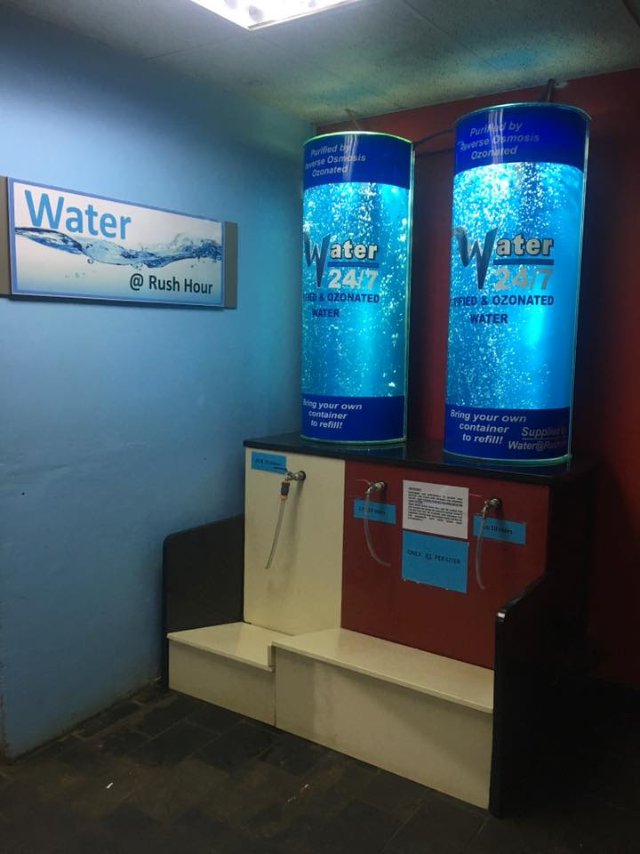
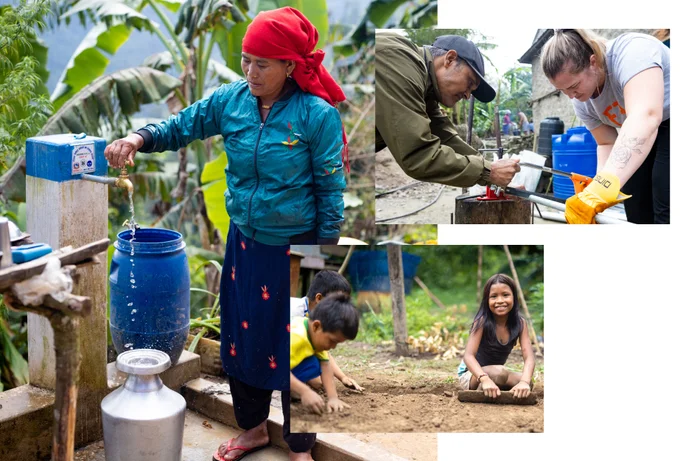

Welcome to Liquifresh
Your trusted partner for clean, safe, and refreshing water solutions in Gauteng. We deliver quality water straight to your door.
Our Services
|  |
Water Refill StationsVisit our nearest water refill station for pure, filtered water. Multiple locations across Gauteng for your convenience. |
Making a Difference
|  |
The Community Before LiquifreshWe're committed to improving access to clean water in our communities, one drop at a time. |
Our Dedicated Team H2OPassionate professionals working together to bring you the highest quality water services. |
Service Area
Liquifresh has stations all around Gauteng
Serving Pretoria, Centurion, Midrand, and surrounding areas with reliable water delivery services.
Ready for Cleaner Water?
Join thousands of satisfied customers who trust Liquifresh for their water needs.
Get Your Quote Today